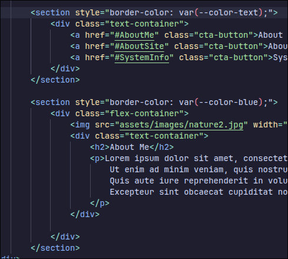

About Me
wip
About This Site
This is my personal static website hosted on GitHub pages. The site is a small learning project, it will change and have issues. The site uses HTML, CSS and JavaScript. The dark theme uses Mocha flavour of Catppuccin. The current light theme uses a combination of custom and Catppuccin colours.
I was looking for options to host links to different profiles. Wasn't really happy with any of them and decided to make my own. I was previously somewhat familiar with GitHub and coding in general so it felt like a good option.
The code and more info can be found in the GitHub repository linked below. Feel free to borrow snippets if you include the original source.
See the repo for this site
Hardware Info
| Motherboard | ASRock B550 Phantom Gaming 4 |
| CPU | AMD Ryzen 5 5600X |
| GPU | NVIDIA GeForce RTX 3060 12G |
| Memory | 32GiB |
| All Disk Space | 2TB ( 1,5 0,5) |
| Resolution | 1920x1080 |
| Monitor | Samsung LS27AG32x @ 165Hz |
| Second Monitor | AOC 27G2WG3- @ 165Hz |
| Mouse | Logitech PRO X Superlight |
| Keyboard | Keychron V3 Max |
| Headset | Logitech PRO X Wireless |
Software Info
| Operating System/Distro | EndeavourOS |
| Kernel | Linux (arch) |
| Display Server | Wayland |
| Window Manager | Hyprland |
| Shell | bash |
| Terminal | kitty |
| Login Manager | sddm |
| GPU Drivers | nvidia (open source) |
| Dual Boot OS | Windows 10 |